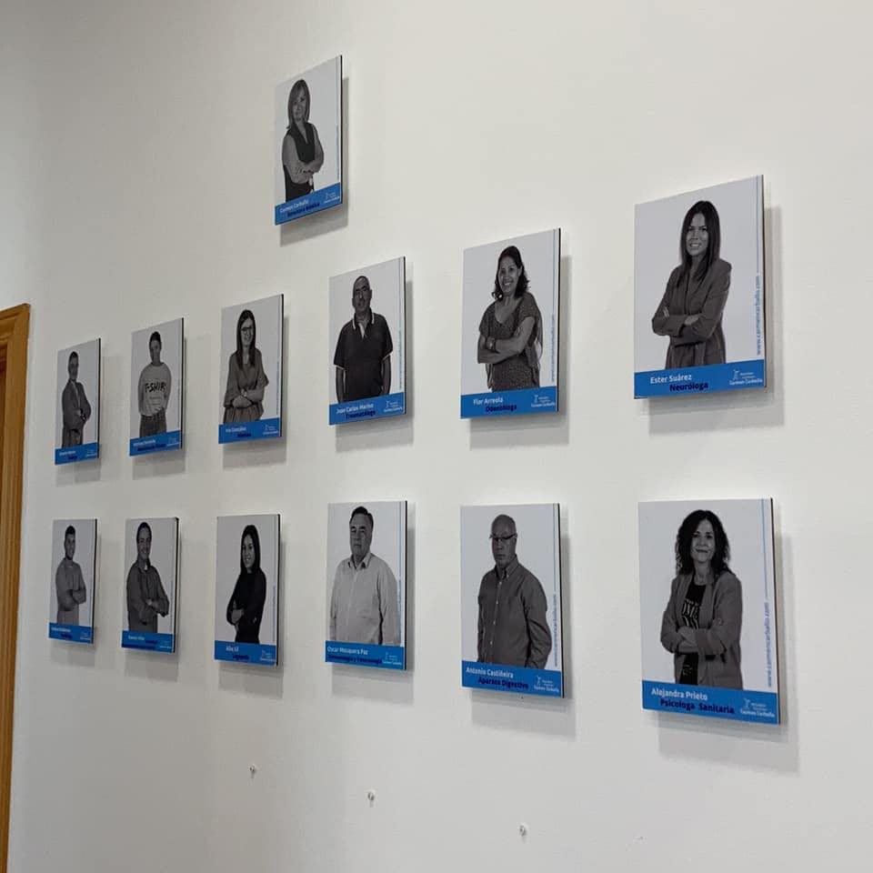

SERVICIOS
2014-2016
Solicita cita previa o información
SERVICIO ONLINE
Consulta previa cita
Teléfono Móvil: 630523226

Consulta en Clínica Médica Cedeira. Cedeira.
Teléfono/ clínica: 981482554 / Móvil: 630523226
Policlínica Carmen Carballo
Rúa tras Cádavo, 11, 15500 Fene. Fene. Tlf: 981343414

Adultos
Talleres Estimulación cognitiva
{kind=link}
Talleres de activación de la memoria en la madurez
Mejora del estado de ánimo: ansiedad, depresión, estrés, etc.
{kind=link}
Orientación psicológica y apoyo a las familias con dependientes
Orientación y mejora de la conducta alimentaria
{kind=link}
Evaluación, intervención y promoción de la salud
Niños
Orientación psicológica
Estimulación cognitiva a través del ordenador
{kind=link}
Juegos Brain-Training
{kind=link}
Técnicas de estudio
Asesoramiento a familias en estilos educativos
Disciplina positiva e inteligencia emocional
Talleres de autoestima y habilidades sociales
Dificultades de aprendizaje: Bajo rendimiento escolar, dislexia, TDAH, lectoescritura, etc
{kind=link}
Orientación psicológica online
{kind=link}
Vejez - Edad Dorada
Valoraciones para solicitar la dependencia
Intervención en deterioros cognitivos
Prevención y mejora del estado de ánimo
Preservar el máximo tiempo posible las ABVD